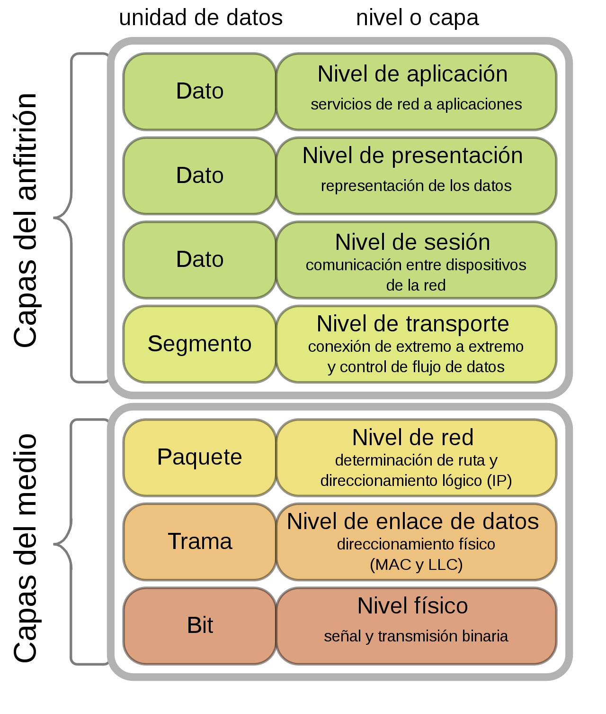
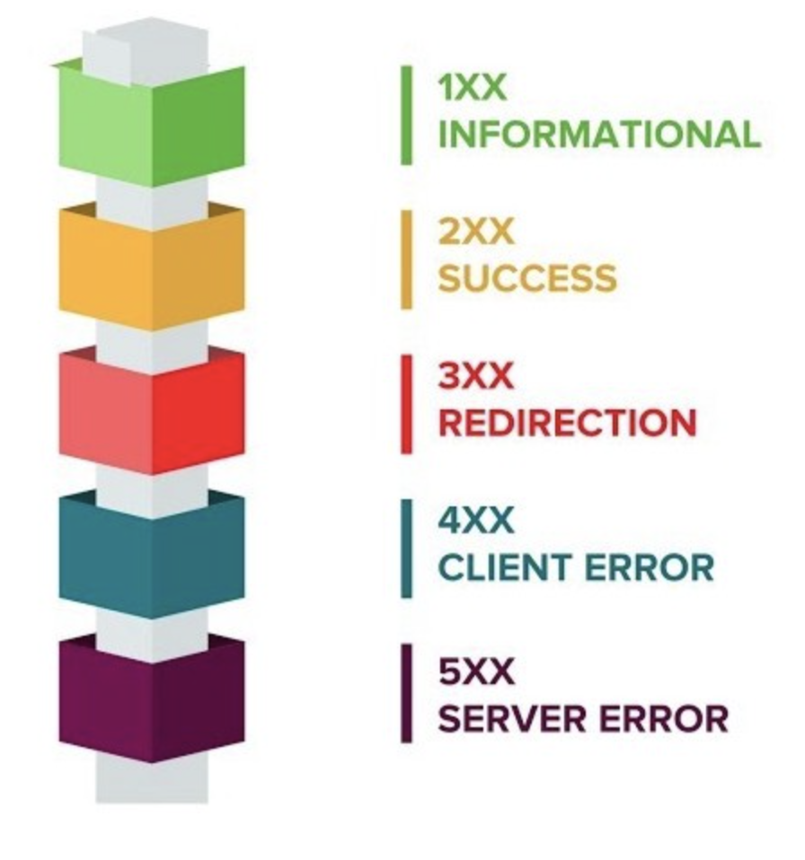
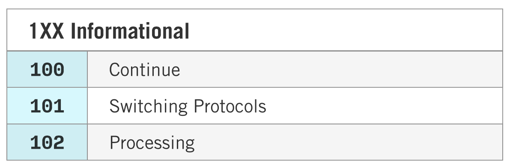
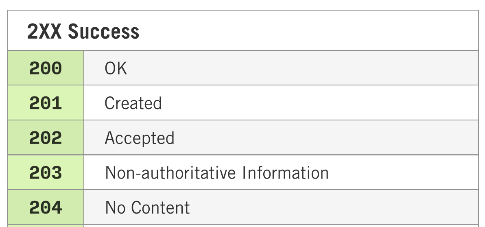
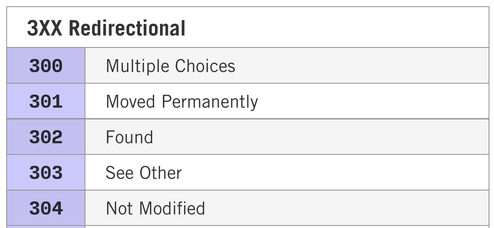
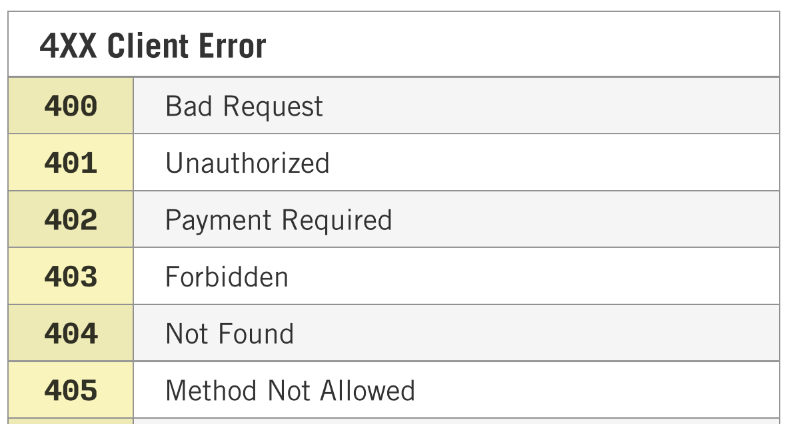
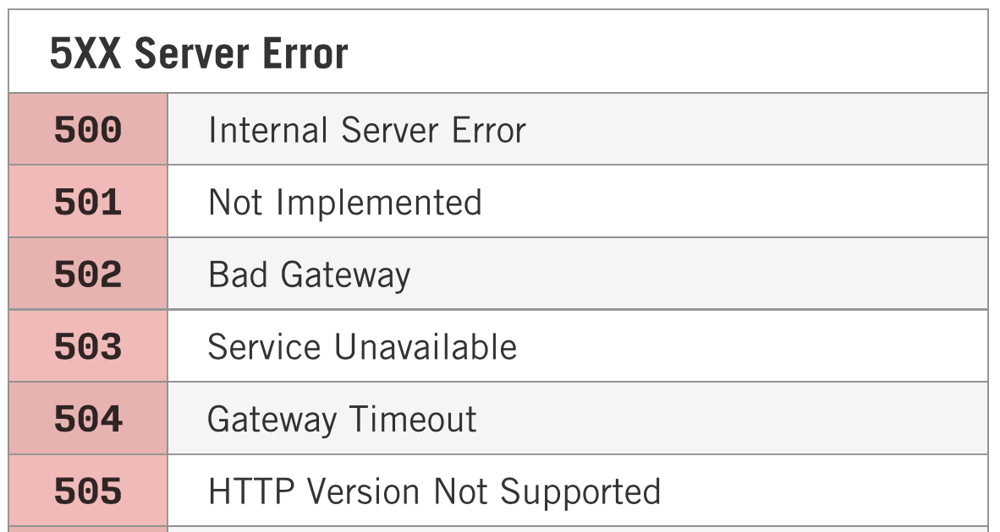

Programación de Aplicaciones Telemáticas
Tema 2: HTTP
Agenda
- Modelo OSI
- World Wide Web
- ¿Que es el protocolo HTTP?
- Evolucion del protocolo HTTP
- HTTP Status Code
- Referencias
Modelo OSI
Modelo OSI (Protocolos)

World Wide Web
- Funcionamiento de la Web
- Arquitectura
- Estándares
- Problemas de la Web
World Wide Web
Es el sistema de distribución de documentos (recursos) accesibles a través de Internet, utilizando un navegador Web para visualizar la información y gestionar la interacción con el usuario.
Arquitectura

Arquitectura
- Traducir la parte nombre del servidor del URL en una dirección IP para poder enviarle paquetes de datos
- Crear una conexión para solicitar un recurso (Página HTML)
- Recibir los ficheros solicitados desde el servidor web, el navegador del cliente representa (renderiza) la página tal y como se describe en el código HTML, el CSS y otros lenguajes web
- Se incorporan las imágenes y otros recursos para producir la página que ve el usuario en su pantalla
Estándares
- Los recursos de una pagina HTML se definen mediante una URI
- La transferencia de información se realiza bajo el protocolo HTTP/HTTPS
- La estructura de los recursos y contenidos se basa en HTML
- La gestión de los estandarés son gobernados por el consorcio W3C
Problemas de la Web
- La velocidad es crítica
- Todo lo que se envía y recibe utilizando los canales tradicionales de transporte y mensajería de la arquitectura web, se hace de forma pública (Confidencialidad)
Problemas de la Web
- La WWW inicial no contemplaba una granularidad de roles. Todos los usuarios de WWW tenían los mismos permisos, y por tanto, no era necesario «conectarse» (Autenticación)
- WWW está diseñado para la recuperación de documentos, y protocolos de mensajería que permiten la invocación de comandos en el servidor (Seguridad de la Red)
¿Que es el protocolo HTTP?
HTTP, de sus siglas en inglés: "Hypertext Transfer Protocol", es el nombre de un protocolo el cual nos permite realizar una petición de datos y recursos, como pueden ser documentos HTML.
¿Que es el protocolo HTTP?

¿Que es el protocolo HTTP?
Diseñado a principios de la década de 1990, HTTP es un protocolo ampliable, que ha ido evolucionando con el tiempo. Es lo que se conoce como un protocolo de la capa de aplicación, y se transmite sobre el protocolo TCP, o el protocolo encriptado TLS.
¿Que es el protocolo HTTP?

Evolucion del protocolo HTTP
- HTTP/0.9 – El protocolo de una sola línea
- HTTP/1.0 – Desarrollando expansibilidad
- HTTP/1.1 – El protocolo estándar
- HTTP/2 – Un protocolo de alto rendimiento
- HTTP/3 - HTTP -> QUIC
Evolucion del protocolo HTTP (HTTP/0.9)
- Protocolo extremadamente sencillo: una petición consiste simplemente en una única linea (GET + Recurso)
- La respuesta también es muy sencilla: solamente consiste el archivo pedido
- No usa cabeceras HTTP, con lo cual únicamente es posible transmitir archivos HTML, y ningún otro tipo de archivos
Evolucion del protocolo HTTP (HTTP/1.0)
- En las peticiones HTTP se incluye la versión
- Se envia un código de estado al inicio de la respuesta para tratar la petición (HTTP-Codes)
- Se incluyen cabeceras HTTP en la petición y la respuesta
- Permite enviar diferentes tipos de archivos/recursos en base a la cabecera "Content-Type"
Evolucion del protocolo HTTP (HTTP/1.1)
- Reutilización de conexiones, permitiendo resolver el problema de velocidad
- Permite recibir las peticiones en "partes"
- Gestión de la cache para recursos estáticos
- La cabecera "Host" permite gestionar diferentes dominios en una misma dirección IP
Evolucion del protocolo HTTP (HTTP/2)
- Evolución del protocolo de comandos de texto a binario
- Peticiones paralelas pueden hacerse sobre la misma connexión, no está sujeto pues a mantener el orden de los mensajes
- Compresión de cabeceras
- Almacenar datos en la caché del cliente mediante un mecanismo denominado 'server push'
Evolucion del protocolo HTTP (HTTP/3)
- Protocolo de transporte experimental de Google publicado en 2013
- Permite el envío de paquetes sencillos de datos a través del UDP (User Datagram Protocol), que no necesita conexión (TCP)
- Rendimiento superior de QUIC frente a TCP es su rapidez en establecer conexión
- Los paquetes QUIC siempre se autentifican y en general suelen estar cifrados
HTTP Status codes
Los códigos de estado son enviados por el servidor en el inicio de la respuesta y permite al navegador gestionar la respuesta en el navegador del cliente.
HTTP Status codes
HTTP Status codes
HTTP Status codes
HTTP Status codes
HTTP Status codes
HTTP Status codes
Referencias
- https://developer.mozilla.org/es/docs/Web/HTTP
- https://openwebinars.net/blog/que-es-el-modelo-osi/
- https://developer.mozilla.org/es/docs/Glossary/World_Wide_Web